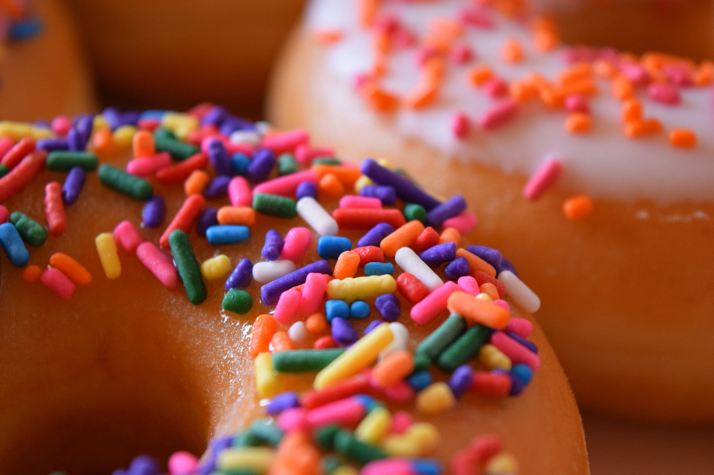

Sobre la Pasteleria Dulzuras y más
Ubicada en San Miguel de Tucumán, la pasteleria Dulzuras y más trae para el mercado lo que hay de mejor para su antojo Dulce. Fundada en 2016, la Pasteleria Dulzuras y más ya es destaque en la ciudad y conquista nuevos clientes diariamente.
Nuestra misión es: "Proporcionar una experiencia de calidad a nuestros clientes"
Ofrecemos productos de primera calidad que están constantemente observando los cambios y movimiento en el mundo de los sabores, para así ofrecer a nuestros clientes las últimas tendencias. El atendimiento posee un padrón de excelencia y agilidad, garantizando calidad y satisfacción de nuestros clientes.
Nuestra Ubicación
Nuestro establecimiento está ubicado en el corazon de la ciudad
Diferenciales
- Envio a Domicilio
- Atención personalizada